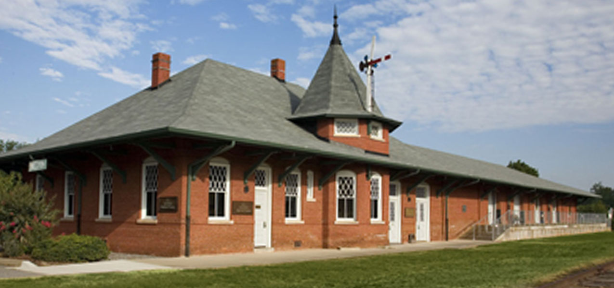
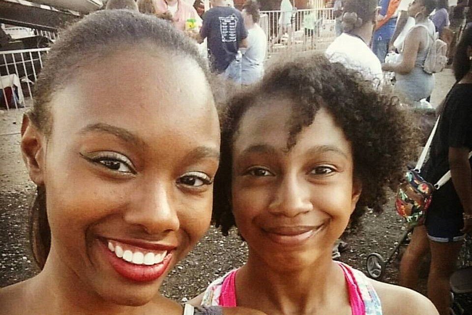
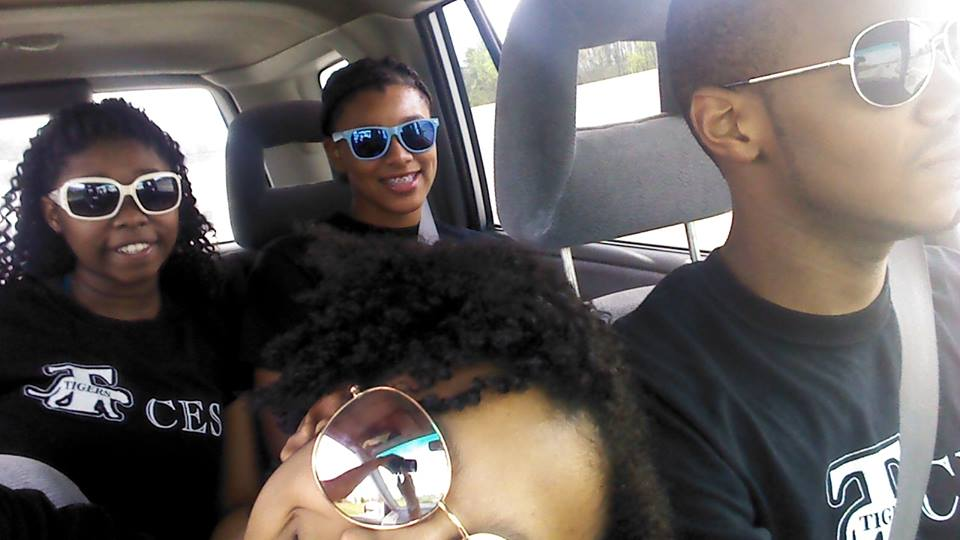
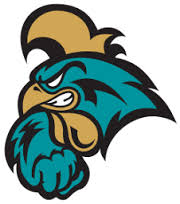

I'm from Belton, SC. It's a town in the Upstate about thirty minutes from Greenville, SC. Only a little over four thousand people live there, so it's a pretty small town. Unless you live the deep country part of town, most of the stores are only a short drive away. The most historical thing about Belton is the Standpipe Festival.

Some of my interest are origami, playing my guitar, video games, watching The Flash, and watching movies. My favorite movies are comic book movies, but I'll watch almost anything besides horror movies. Although I prefer going to the movies, I also like to watch them at home with friends and family I got into origami and guitar playing when I was younger.

My mom is a teacher who loves education and now I do to. I love learning new things and college is a great place to do that. I aslo decided to go to college for the experience that comes with it.

I chose Coastal because of the location, campus, and the community here. I like the size of the campus and how it is designed. Also I like how close it is to the beach. My major is computer science. I chose it because I like learning new programming languages and coding. After I graduate I plan on getting my Masters in Software engineering.My goal is to end my first year here academically successful.
{kind=link}